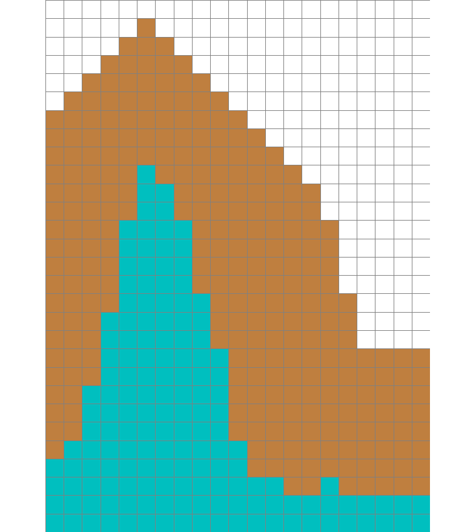
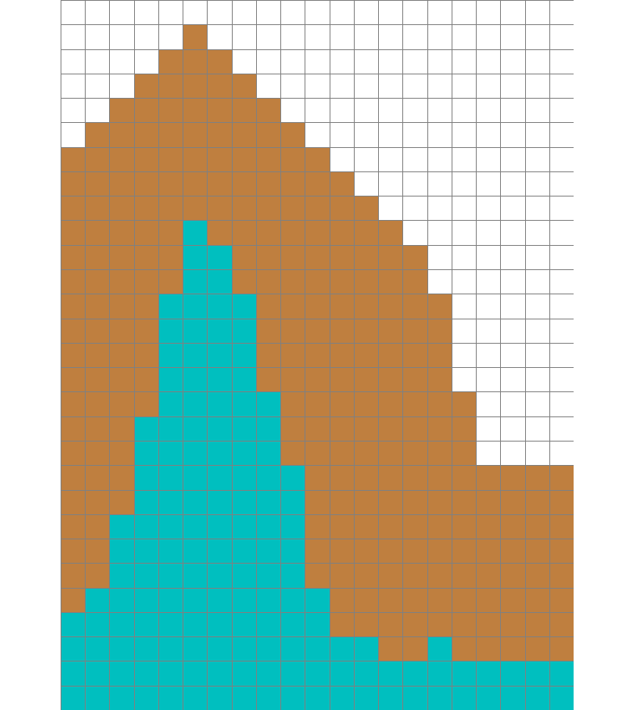
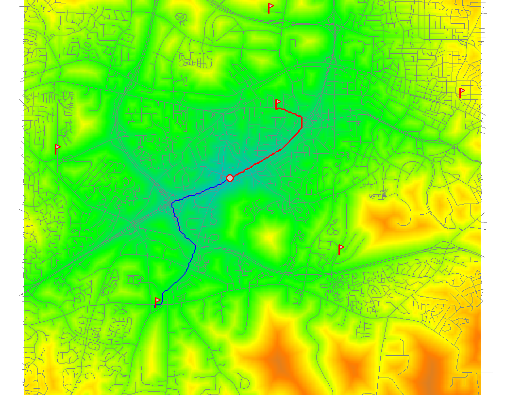

Geospatial Analysis
proximity, buffers, cost surfaces
Helena Mitasova
Learning objectives
- Understand different metrics for distance
- Define buffer operation, discrete and continous buffers
- Explain concept of cost surfaces
- Understand least cost path
Measuring distance
- Euclidean: shortest distance in plane
- Geodesic: shortest distance over curved surface, great circle on sphere: orthodrome
- $L^p$ metrics on meshes or grids
- Linear referencing systems
Measuring distance: spheroid
- Geodesic: shortest distance over curved surface
- Rhumbline: constant bearing path, line in Mercator projection, not the shortest path

Measuring distance: plane
- Generalized distance: $L^p$ metrics for measuring distance on meshes or grids
- distance between two points $a(x_1,y_1)$ and $b(x_2,y_2)$
- $d_p(a,b)=[(x_1-x_2)^p + (y_1-y_2)^p]^{1/p}$
- $p=2$ : Euclidean distance
- $p=1$ : Manhattan (Taxicab, City block) metric
- Linear Referencing Systems:
location is defined by its linear distance from a known point on a route
and distance is measured along segments of a network; used for roads, utilities, waterways
Measuring distance: networks
Manhattan metric, Linear Referencing Systems
Measuring feature length
- what is the length of NC coastline? Neuse river?
- feature length is scale dependent
- vector model: length depends on level of detail captured by the vertices
- raster model: resolution and level of detail (grain)
- natural features are often complex fractals
Measuring feature length
Compare stream length from
USGS NHD and a stream derived from a local 1m lidar-based DEM

NHD streams are mapped at 1:24000 scale, they have simplified geometry, leading to shorter length.
Measuring feature length
Compare length of NC Coastline from NC GIS and from a World map 1:10M


World map scale 1km=0.1mm - narrow barrier islands are not represented
Keep scale in mind when comparing length of features represented at different scales!
Raster-based proximity to features
- discrete:
- applies to raster representation of discrete features (points, lines, areas)
- creates discrete buffer zones from a given feature
- requires resolution sufficiently higher than the buffer widths
- continuous:
- derives proximity raster from a given feature
- computes distances from a feature for every cell
- equivalent to cumulative cost surface with uniform cost=1
- resolution controls the distance precision - step
Raster map buffer: points
- Task: map forested areas around schools
- Create discrete point buffers at selected distances

Raster map buffer: points
- Use map algebra to combine buffers with landcover
school_buf_forest = if(landcl98 == 5 && school_buff, school_buff, 0)

Use vector operations to add comlumn to school attribute table and add percent forested area within the buffer,
keep in mind our 30m resolution. Why do we use 0 and not null in the expression?
Raster map buffer: areas
Create buffers at a given distance, compare Euclidean and Manhattan distance metrics
 

Raster map buffer: areas
- Map developed areas within walking distance of lakes
- Use map algebra to combine buffers with landcover
lake_buf_dev = if(landcl98 == 1 && lake_buff, lake_buff, 0)

Raster map buffer: lines
- Identify developed areas and schools that may be impacted by noise from a highway
- Create buffers, combine with landcover
noise = if(landuse96_28m==1 || landuse96_28m==2, roads_buffers, null())

why 0 and not null?
Raster map buffer: lines
- Compute number of children potentially impacted
- Convert schools to raster using the number of students attribute and use map algebra
schools_noise = if(int(schoolscap_10m) && roads_buffers == 2, int(schoolscap_10m), null())

Cost surfaces
Cumulative (accumulated) cost surface measures proximity based on cost:
- raster representation of cumulative cost
of reaching the target point(s) from any location in the given region.
Input cost map
- value assigned to a cell represents cost of traversing that cell,
- cost can be based on time, energy, price, etc.
Cumulative cost surface to a point
Proximity surface represents
shortest path (distance) from each cell to the target point if cost for each cell is 1

Derive continuous buffer as a subset with distance less than given threshold
Cumulative cost surface
To measure the proximity (distance), traverse the region in:
standard 8 directions,
Knight 16 directions


cost for each cell is 1
Cost map
If cost is spatially variable, we need to define cost to traverse each grid cell,
usually expressed as time $t[s]$ derived, for example, from:
- speed data for driving,
- velocity estimates for flows,
- slope, vegetation and obstacles for walking on trails
Example: cost map derived as time $t[s]$ needed to traverse a $d[m]$ resolution grid cell
$$ t = d / v $$
where, $v$ [m/s] is speed, approximated e.g., by speed limit stored in roads/streets data layer.
Cost map is computed using arithmetic expression in map algebra.
Cost map
- Speed limit and cost raster maps
- Cost is time $t$ [s] to traverse a 30m cell, off-road cells are assigned 5 mi/hr.

Cost can be defined per grid cell or per map unit, depending on implementation
Cumulative cost surface
Cumulative cost surface represents the time to reach the target point A from anywhere in the region.
The higher the hill the more time it takes to reach A (red point), highways are valleys,
blue points are firestations
Least cost path
- using the cumulative cost surface, find the least cost (fastest) path to the target point
- least cost path follows the oposite directions used for creating the cumulative
cost surface: back-links
- similar to steepest slope line used for flow routing with terrain replaced by cost surface
Least cost path: back-link raster
- direction of least cost path to the target from all grid cells = backlink map
- equivalent to surface gradient direction (aspect) map


Aspect map derived from the cumulative cost cost surface
using r.slope.aspect, colored consistently with Arc backlink output. Backling map from Amy Nau
Least cost path between two points
Least cost path from a given point to the target follows gradient direction - backlinks


Least cost path applications
- find firefighters escape routes
- design optimal trails
- extract foredune ridge from coastal DEM
- find safe access routes during natural disaters (earthquakes, floods)
- estimate time for watewater to get to treatment plant from any point in sewershed
Least cost path applications
Locate the firestation that can reach the accident site $A$ on the highway the fastest and identify the shortest path:
- use query to extract cumulative cost (travel time) to A from all firestations, add the time
to the attribute table
- identify the firestation $F_1$ with the lowest cost
- trace the least cost path from $F_1$ to $A$

Example from the assignment shows two LCP, note the issue with overpass
Cost surface for walking
Empirical equation to estimate time $t[s]$ to traverse a grid cell walking in complex terrain:
$$
t = a\Delta s + b \Delta h_u + c \Delta h_{md} + d \Delta h_{sd} + w.f
$$
- $a,b,c,d$ [s/m]: weights, functions of inverse speed $1/v$
- $\Delta s$ [m]: distance across a grid cell
- $\Delta h_u, \Delta h_{md}, \Delta h_{sd}$ [m] - elevation difference upslope, moderate downslope and steep downslope
- $w.f$ [s]: added time needed to traverse a cell due to friction, $f$ is a friction map, $w$ is weight
- walking upslope and steep downslope increase cost, moderate downslope decreases cost.
- default values for $a,b,c,d$ are empirical coefficients, based on man walking effort at standard conditions.
Input data for estimating cost
Walking cost combines inputs derived from elevation $\Delta h_u, \Delta h_{md}, \Delta h_{sd}$,
land cover is used for friction map $f$.

low friction: developed areas, streets and roads; moderate friction: forest;
extreme friction (barrier): lakes
Cumulative cost surface
Cumulative cost surface and isochrones to support search for lost person
last seen at point A.

Orange isochrone delineates search area for given time of 1.5 hr
Cumulative cost surface from lines
Cumulative cost distance from major roads based on travel time (cost) estimated
from speed limit. Target is lines represented by set of points.

Compare with buffers - areas within the cost distance less than a given threshold
Cumulative cost surface for monitoring
- Estimate time wastewater travels from source to wastewater plant
- Time ito traverse a grid cell is computed using flow velocity estimated by Mannings equation as function of roughness, flow depth and slope
- Important for interpeting measured concentrations of SARS-CoV2 in wastewater to
monitor trends in COVID-19
Monitoring pathogens
Time to wastewater plant from any location connected to sewer network and a sub-sewersheds map
Summary
- measuring distance is scale dependendent, different metrics can be defined
- buffers are used to analyze variables or features in proximity of points, lines and areas
- cumulative cost surfaces measure proximity based on cost
- least cost path finds optimized route based on cumulative cost surface